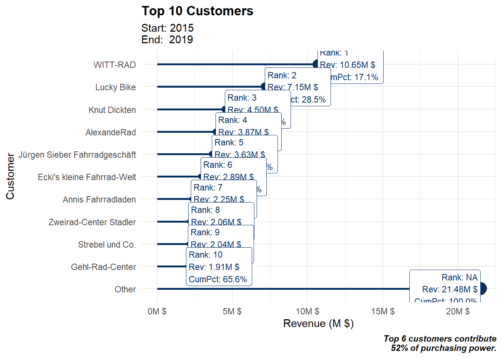

library(tidyverse)
library(lubridate)
library(tidyr)
library(dplyr)
library(ggrepel)
#Load the data
covid_data_tbl <- read_csv("https://covid.ourworldindata.org/data/owid-covid-data.csv")%>%
select(location, date, total_cases) %>%
mutate(ym = floor_date(date, "month")) %>%
group_by(location,ym) %>%
#order_by(month_year)%>%
summarize(total_covid_cases = sum(total_cases)) %>%
ungroup()
#covid_data_tbl %>% glimpse()
covid_locations <- covid_data_tbl %>%
filter(location == "Germany" | location == "United Kingdom" |
location == "France" | location == "Spain" | location == "United States") %>%
mutate(cases_dec = scales::dollar(total_covid_cases, big.mark = ".",
decimal.mark = ",",
prefix = "",
suffix = ""))
#filter_countries %>% glimpse()
covid_locations %>%
ggplot(aes(ym, total_covid_cases, color = location)) +
geom_line(size = 1)+
scale_x_date(date_labels = "%B %y", breaks = covid_locations$ym)+
scale_y_continuous(labels = scales::dollar_format(scale = 1/1e6,
prefix = "",
suffix = " M")) +
labs(
title = "COVID-19 confirmed cases worldwide",
subtitle = "As of 16/04/2021",
x = "",
y = "Cumulative Cases",
fill = "location"
) +
theme_classic()+
theme(legend.position = "bottom",axis.text.x = element_text(angle = 45,hjust=1))library(maps)
world <- map_data("world")
covid_data_tbl <- read_csv("https://covid.ourworldindata.org/data/owid-covid-data.csv") %>%
select(location, date,total_deaths, population) %>%
mutate(mortality_rate = total_deaths/population)%>%
filter(date == as.Date('2021-04-16')) %>%
#locations
mutate(location = case_when(
location == "United Kingdom" ~ "UK",
location == "United States" ~ "USA",
location == "Democratic Republic of Congo" ~ "Democratic Republic of the Congo",
TRUE ~ location
)) %>%distinct() %>%
#merging tables
left_join(y = world, by = c("location" = "region"))
covid_data_tbl %>%
ggplot() +
geom_map(aes(long, lat, map_id = location, fill = mortality_rate),map = world) +
scale_fill_gradient2(
low = "tomato1",
mid = "tomato3",
high = "brown",labels = scales::percent
)+
labs(
title = "Confirmed COVID-19 deaths relative to the size of population",
subtitle = "Around 3 Million confirmed COVID-19 deaths worldwide",
fill = "mortality_rate",
x = "",
y = "",
caption = "Date: 04/16/2021"
) +
theme_light()#1. Load libraries and data
#Case 1
# 1.0 Lollipop Chart: Top N Customers ----
library(tidyverse)
library(lubridate)
bike_orderlines_tbl <- read_rds("00_data/Business Decisions with Machine Learning/bike_orderlines.rds")
#2. Data manipluation
n <- 10
# Data Manipulation
top_customers_tbl <- bike_orderlines_tbl %>%
# Select relevant columns
select(bikeshop, total_price) %>%
# Collapse the least frequent values into "other"
mutate(bikeshop = as_factor(bikeshop) %>% fct_lump(n = n, w = total_price)) %>%
# Group and summarize
group_by(bikeshop) %>%
summarize(revenue = sum(total_price)) %>%
ungroup() %>%
# Reorder the column customer_city by revenue
mutate(bikeshop = bikeshop %>% fct_reorder(revenue)) %>%
# Place "Other" at the beginning
mutate(bikeshop = bikeshop %>% fct_relevel("Other", after = 0)) %>%
# Sort by this column
arrange(desc(bikeshop)) %>%
# Add Revenue Text
mutate(revenue_text = scales::dollar(revenue,
scale = 1e-6,
prefix = "",
suffix = "M $")) %>%
# Add Cumulative Percent
mutate(cum_pct = cumsum(revenue) / sum(revenue)) %>%
mutate(cum_pct_text = scales::percent(cum_pct)) %>%
# Add Rank
mutate(rank = row_number()) %>%
mutate(rank = case_when(
rank == max(rank) ~ NA_integer_,
TRUE ~ rank
)) %>%
# Add Label text
mutate(label_text = str_glue("Rank: {rank}\nRev: {revenue_text}\nCumPct: {cum_pct_text}"))
#3 Data Visualization
top_customers_tbl %>%
# Canvas
ggplot(aes(revenue, bikeshop)) +
# Geometries
geom_segment(aes(xend = 0, yend = bikeshop),
color = RColorBrewer::brewer.pal(n = 11, name = "RdBu")[11],
size = 1) +
geom_point(aes(size = revenue),
color = RColorBrewer::brewer.pal(n = 11, name = "RdBu")[11]) +
geom_label(aes(label = label_text),
hjust = "inward",
size = 3,
color = RColorBrewer::brewer.pal(n = 11, name = "RdBu")[11]) +
# Formatting
scale_x_continuous(labels = scales::dollar_format(scale = 1e-6,
prefix = "",
suffix = "M $")) +
labs(
title = str_glue("Top {n} Customers"),
subtitle = str_glue(
"Start: {year(min(bike_orderlines_tbl$order_date))}
End: {year(max(bike_orderlines_tbl$order_date))}"),
x = "Revenue (M $)",
y = "Customer",
caption = str_glue("Top 6 customers contribute
52% of purchasing power.")
) +
theme_minimal() +
theme(
legend.position = "none",
plot.title = element_text(face = "bold"),
plot.caption = element_text(face = "bold.italic")
)
#Case 2
#1. Data manipluation
# Select columns and filter categories
pct_sales_by_customer_tbl <- bike_orderlines_tbl %>%
select(bikeshop, category_1, category_2, quantity) %>%
filter(category_1 %in% c("Mountain","Road")) %>%
# Group by category and summarize
group_by(bikeshop, category_1, category_2) %>%
summarise(total_qty = sum(quantity)) %>%
ungroup() %>%
# Add missing groups (not necessarily mandatory, but we'd get holes in the plot)
# complete() creates NAs. We need to set those to 0.
complete(bikeshop, nesting(category_1, category_2)) %>%
mutate(across(total_qty, ~replace_na(., 0))) %>%
# Group by bikeshop and calculate revenue ratio
group_by(bikeshop) %>%
mutate(pct = total_qty / sum(total_qty)) %>%
ungroup() %>%
# Reverse order of bikeshops
mutate(bikeshop = as.factor(bikeshop) %>% fct_rev()) %>%
# Just to verify
mutate(bikeshop_num = as.numeric(bikeshop))
#3 Data Visualization
pct_sales_by_customer_tbl %>%
ggplot(aes(category_2, bikeshop)) +
# Geometries
geom_tile(aes(fill = pct)) +
geom_text(aes(label = scales::percent(pct, accuracy = 1L)),
size = 3) +
facet_wrap(~ category_1, scales = "free_x") +
# Formatting
scale_fill_gradient(low = "white", high = "#2C3E50") +
labs(
title = "Heatmap of Purchasing Habits",
x = "Bike Type (Category 2)",
y = "Customer",
caption = str_glue(
"Customers that prefer Road:
To be discussed ...
Customers that prefer Mountain:
To be discussed ...")
) +
theme(
axis.text.x = element_text(angle = 45, hjust = 1),
legend.position = "none",
plot.title = element_text(face = "bold"),
plot.caption = element_text(face = "bold.italic")
)